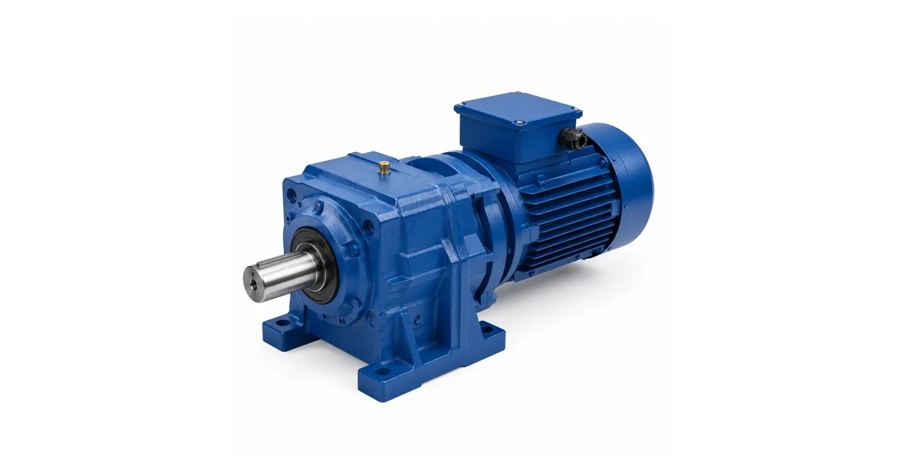

Собственное производствоПромышленные редукторы для производителей оборудования•Отгрузка по всей России•Аналоги SEW, NORD, Bonfiglioli без переделки рамы•Расчёт и КП за 15 минут•Гарантия 36 месяцевПромышленные редукторы для производителей оборудования•Отгрузка по всей России•Аналоги SEW, NORD, Bonfiglioli без переделки рамы•Расчёт и КП за 15 минут•Гарантия 36 месяцев
Flender серия H — цилиндрические редукторы H1–H4: расшифровка, момент, подбор замены
Flender серия H — тяжёлые промышленные цилиндрические редукторы с параллельными валами. Цифра после буквы — число ступеней: H1 (одна), H2 (две), H3 (три), H4 (четыре). Типоразмеры 03–14, номинальный крутящий момент от 3 300 до 113 000 Н·м, передаточные числа от 1,25 до 450. Разбираем, как читается обозначение и как корректно подобрать замену.

Типовое исполнение цилиндрического редуктора с параллельными валами
Что такое серия H у Flender
Буква H в обозначении Flender означает цилиндрический редуктор — вся мощность передаётся цилиндрическими зубчатыми парами, входной и выходной валы параллельны друг другу. Это классическая схема «параллельных валов» для приводов конвейеров, мельниц, дробилок, смесителей, экструдеров и барабанов — то есть для оборудования, где привод стоит вдоль линии и разворачивать поток мощности на 90° не требуется.
Следом за буквой идёт цифра — число ступеней. H1 — одноступенчатый, H2 — двухступенчатый, H3 — трёхступенчатый, H4 — четырёхступенчатый. Чем больше ступеней, тем шире доступный диапазон передаточных чисел и тем ниже обороты на выходе при том же двигателе. Полное обозначение содержит ещё вид выходного вала, монтажное положение и типоразмер — это разобрано отдельно на странице обозначение Flender.
Серии H1, H2, H3, H4 — момент, передаточные, типоразмеры
Ряды серии H по каталогу Flender MD 21.1
Обозначение
Число ступеней
Типоразмеры
Номинальный момент, Н·м
Передаточное число i
H1
1
03–13
3 300 – 75 700
1,25…5,6
H2
2
03–14
3 500 – 107 000
6,3…28
H3
3
05–14
11 600 – 109 000
22,4…112
H4
4
07–14
21 700 – 113 000
100…450
Источник данных по сериям — каталог Flender MD 21.1 FLENDER GEAR UNITS и инструкции по эксплуатации BA 5010 / BA 5032 / BA 5091.
Из таблицы видно логику ряда: диапазоны передаточных чисел у соседних серий стыкуются почти без разрывов — 1,25…5,6 у H1, 6,3…28 у H2, 22,4…112 у H3 и 100…450 у H4. Поэтому нужное передаточное почти всегда закрывается ровно одной серией, а выбор между «трёхступенчатым покрупнее» и «четырёхступенчатым помельче» возникает только на стыках диапазонов.
Номер типоразмера (03, 05, 09, 11, 14 и т. д.) отвечает за габарит корпуса и, соответственно, за несущую способность: чем он больше, тем выше допустимый момент, крупнее подшипники и толще валы. Внутри одного типоразмера момент дополнительно зависит от фактического передаточного числа, поэтому в каталоге приводится не одно число, а таблица по каждой комбинации.
Как подобрать замену редуктору Flender H
У Flender нет прямого «переводного» соответствия с нашими типоразмерами, и мы его не публикуем — придуманная таблица соответствий на таких моментах опасна. Рабочая методика другая:
Снимите шильд. На нём есть полное обозначение (например, H3SH13), заводской номер, передаточное число, номинальный момент или мощность и монтажное положение. Фото шильда — самый быстрый способ идентификации.
Приложите габаритный чертёж или обмеры. Критичны межосевое расстояние, высота оси, диаметр и вылет выходного вала, схема крепления и расположение лап или фланца — см. габаритно-присоединительные размеры.
Зафиксируйте режим работы. Часы в сутки, число пусков, характер нагрузки (ровная, ударная, реверс), температура среды. Отсюда берётся сервис-фактор, и именно он чаще всего определяет, подойдёт ли внешне похожий редуктор.
Отправьте данные на расчёт. Быстрый вариант — калькулятор подбора, точный — заявка инженеру: мы считаем момент, тепловой баланс и радиальные нагрузки на валы.
Честно о границах. Flender серии H — это тяжёлое промышленное оборудование с моментами до 113 000 Н·м, а не мотор-редукторы общепромышленного ряда. Обещать замену «один в один» серийной линейкой ZR по всему диапазону было бы неправдой: часть типоразмеров закрывается серийными изделиями, а по верхним моментам мы считаем индивидуально — под конкретную раму, чертёж и режим. Что реально возможно и в какие сроки, инженер говорит после расчёта; общий подход к замене импорта описан в разделе импортозамещение, ориентиры по стоимости — в разделе цены.
Подбор замены начинается с шильда и габаритного чертежа — раздел Flender
Частые вопросы: Flender серия H
Что такое Flender серия H?
Flender серия H — цилиндрические редукторы тяжёлого класса с параллельными валами. Цифра после буквы означает число ступеней: H1 — одна, H2 — две, H3 — три, H4 — четыре. Типоразмеры 03–14, номинальный момент от 3 300 до 113 000 Н·м.
Чем H1 отличается от H4?
Числом ступеней и, как следствие, диапазоном передаточных чисел. H1 — одноступенчатый, i от 1,25 до 5,6, момент 3 300–75 700 Н·м. H4 — четырёхступенчатый, i от 100 до 450, момент 21 700–113 000 Н·м. Чем больше ступеней, тем ниже выходные обороты при том же двигателе.
Какие типоразмеры бывают в серии H?
По каталогу MD 21.1: H1 — типоразмеры 03–13, H2 — 03–14, H3 — 05–14, H4 — 07–14. Номер типоразмера задаёт габарит корпуса и несущую способность: чем он больше, тем выше допустимый момент.
Как подобрать замену редуктору Flender H?
По шильду и габаритному чертежу, а не по таблице соответствий. Нужны полное обозначение, передаточное число, момент или мощность, монтажное положение, вид выходного вала и режим работы. Предварительный подбор — в калькуляторе /podbor, точный расчёт делает инженер.
Можно ли заменить Flender H редуктором ZR один в один?
Не по всему диапазону. Flender H — тяжёлые промышленные редукторы с моментами до 113 000 Н·м, поэтому часть позиций закрывается серийными изделиями, а по верхним моментам мы считаем индивидуально под чертёж и режим работы. Ответ даёт инженер после расчёта.
Как оформить заказ?
Заявка через сайт, письмо на zr@zavod-red.ru или звонок менеджеру. Для юрлиц — счёт по реквизитам, для частных лиц — оплата картой.
Какая доставка по России?
Любой транспортной компанией до терминала или двери; отгрузка со склада в Челябинске за 1–3 дня, упаковка — обрешётка.
Как подобрать редуктор под задачу?
Нужны: мощность двигателя, обороты на входе и выходе, крутящий момент, режим работы. Инженер рассчитывает типоразмер и передаточное число.
Какая гарантия на редуктор?
36 месяцев с даты отгрузки. Паспорт изделия, декларация ЕАС, сертификат ГОСТ. При заводском дефекте — замена по договору.
Flender серия H — цилиндрические редукторы H1–H4 с параллельными валами: расшифровка обозначения, число ступеней, типоразмеры 03–14, номинальный момент до 113 000 Н·м и передаточные числа 1,25…450. Подбор замены — по шильду и габаритному чертежу, расчёт от Завода Редукторов (ООО «НИИ АТТ», Челябинск), гарантия 36 месяцев.
Партнёрская программа завода
Инженерам и проектировщикам — 5% с заказа
Рекомендуете наши редукторы коллегам, заказчику или своему отделу снабжения? За каждый состоявшийся заказ по вашей рекомендации выплачиваем 5% от суммы — реферальное вознаграждение переводом на карту. Прозрачный договор, работа со снабженцами и проектными отделами напрямую, отгрузка от производителя (ООО «НИИ АТТ», Челябинск).